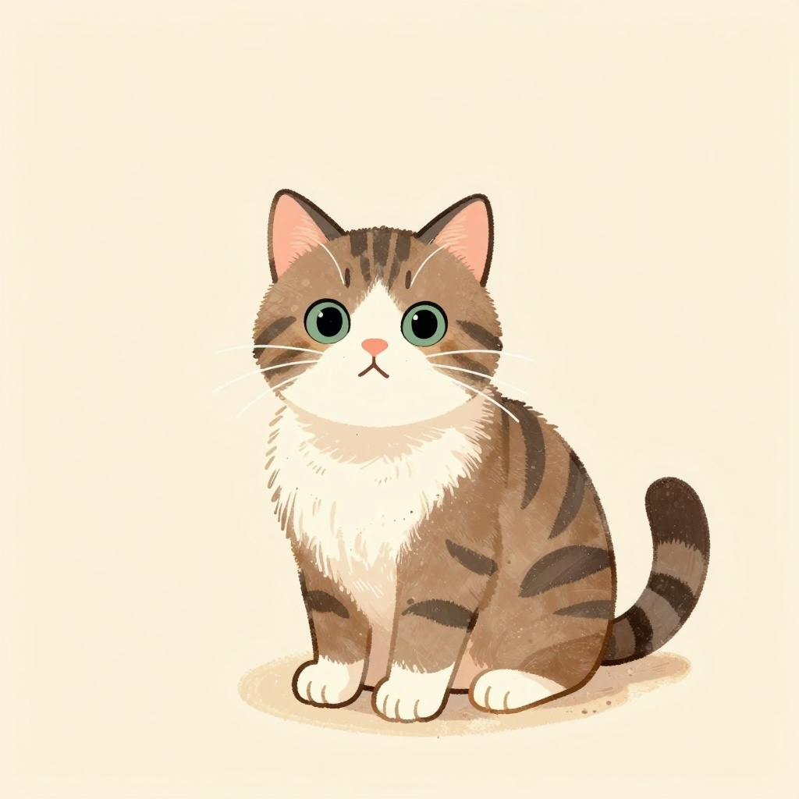
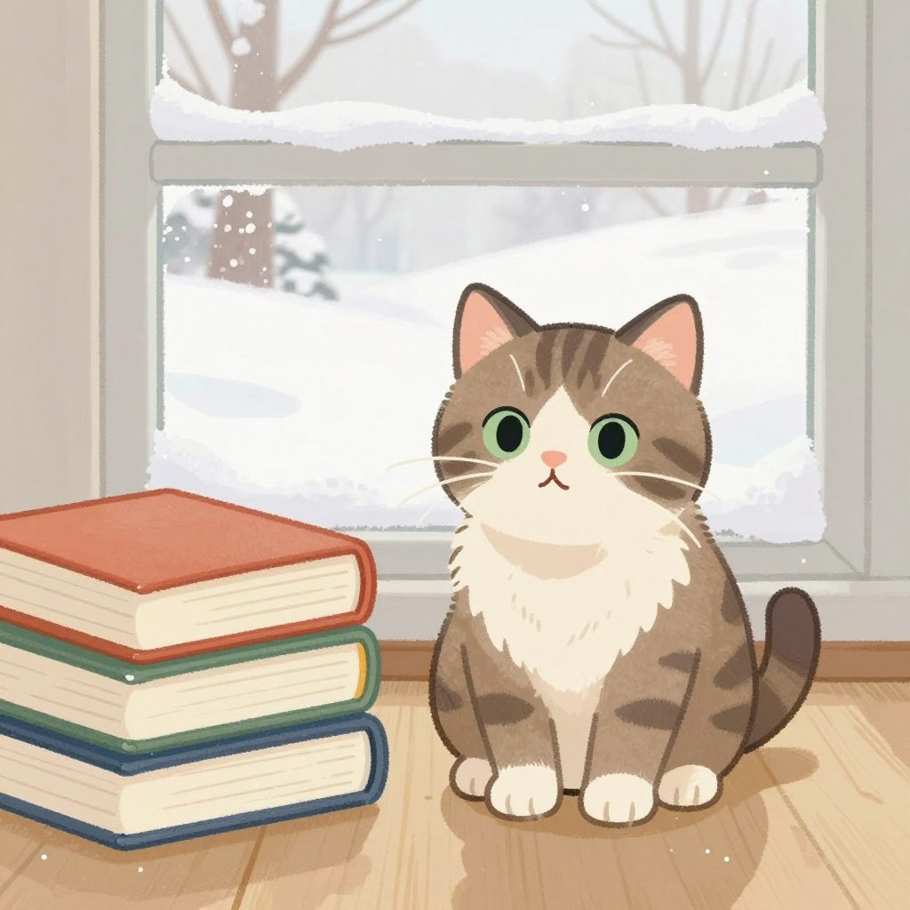
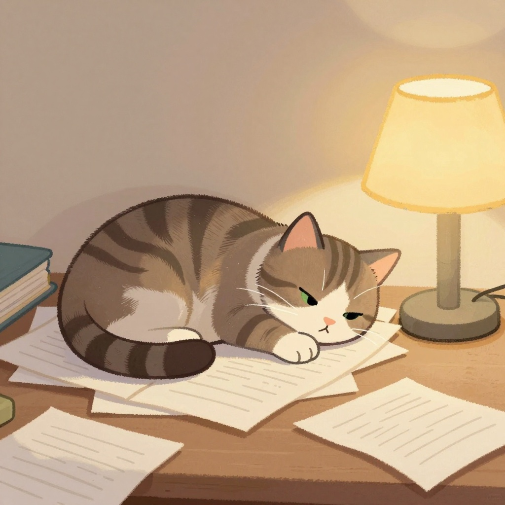
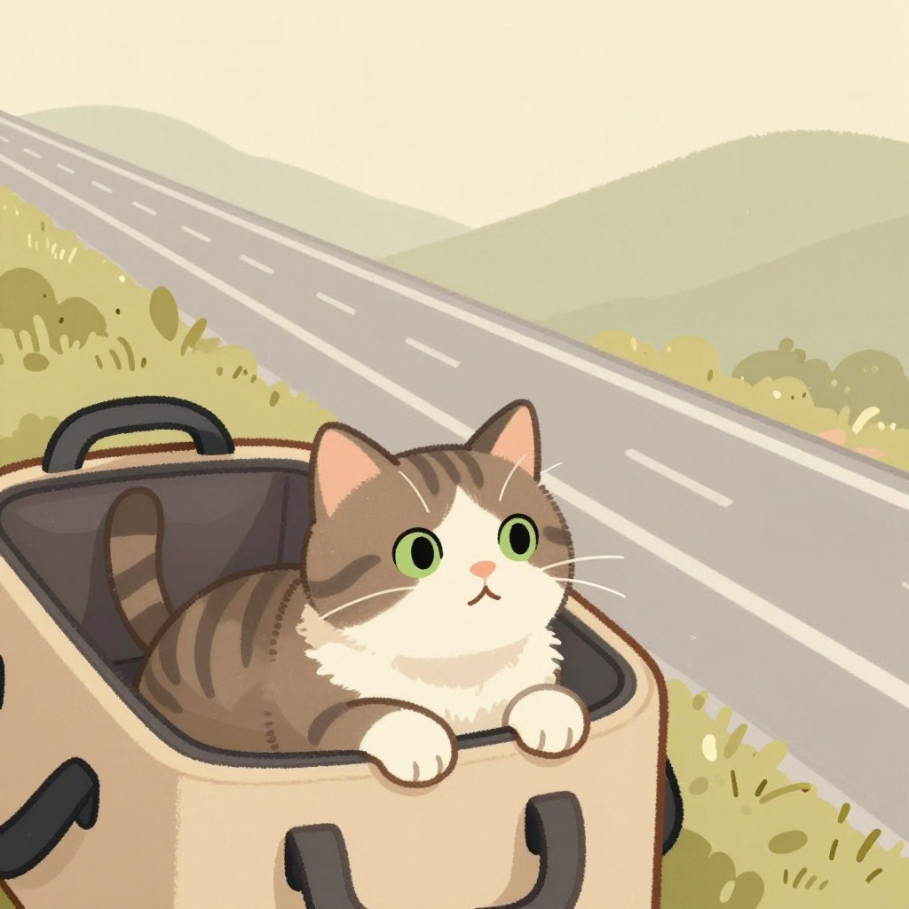
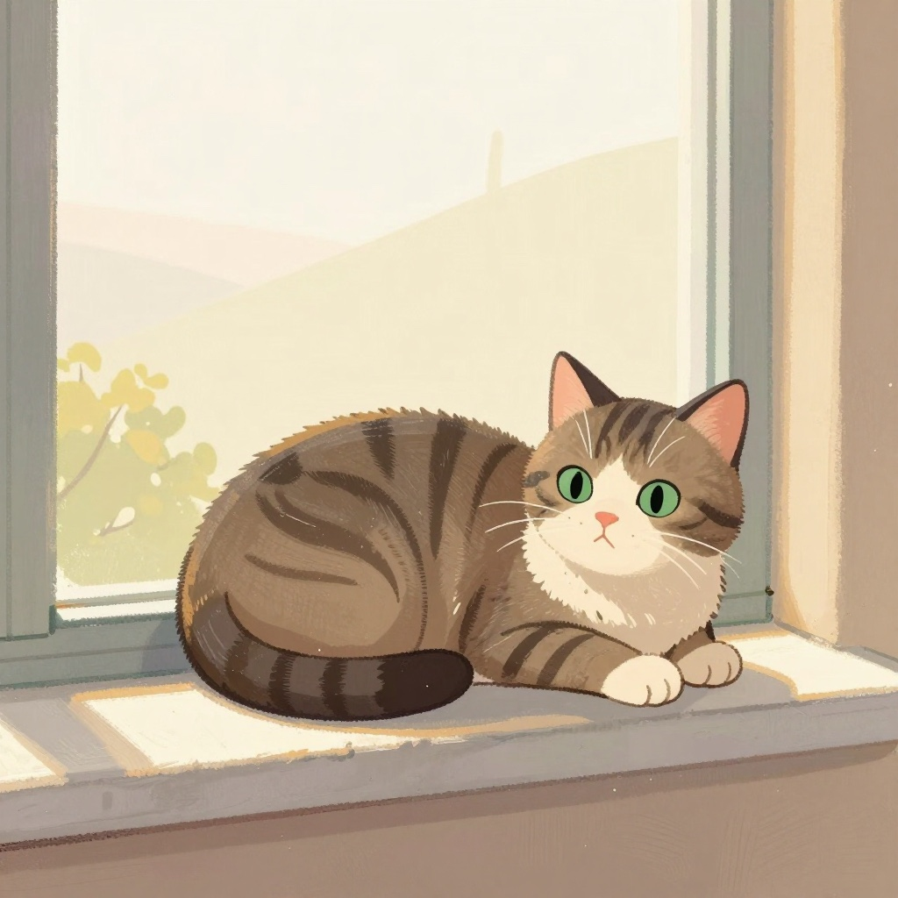
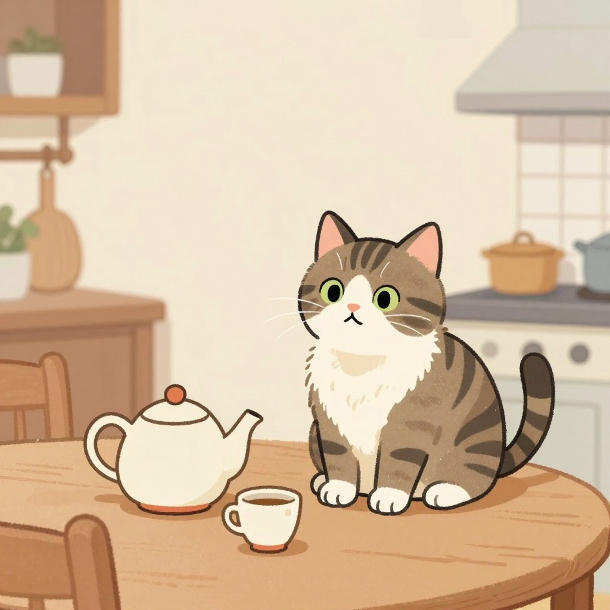
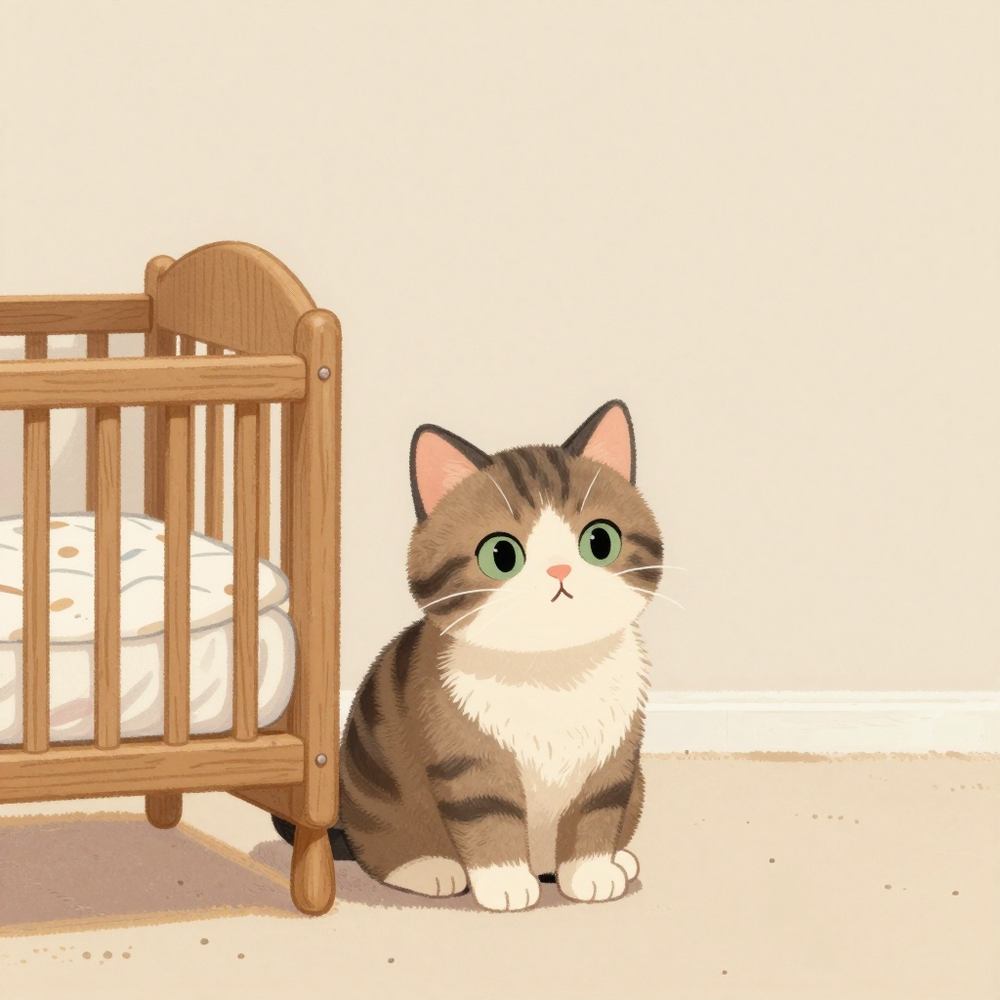
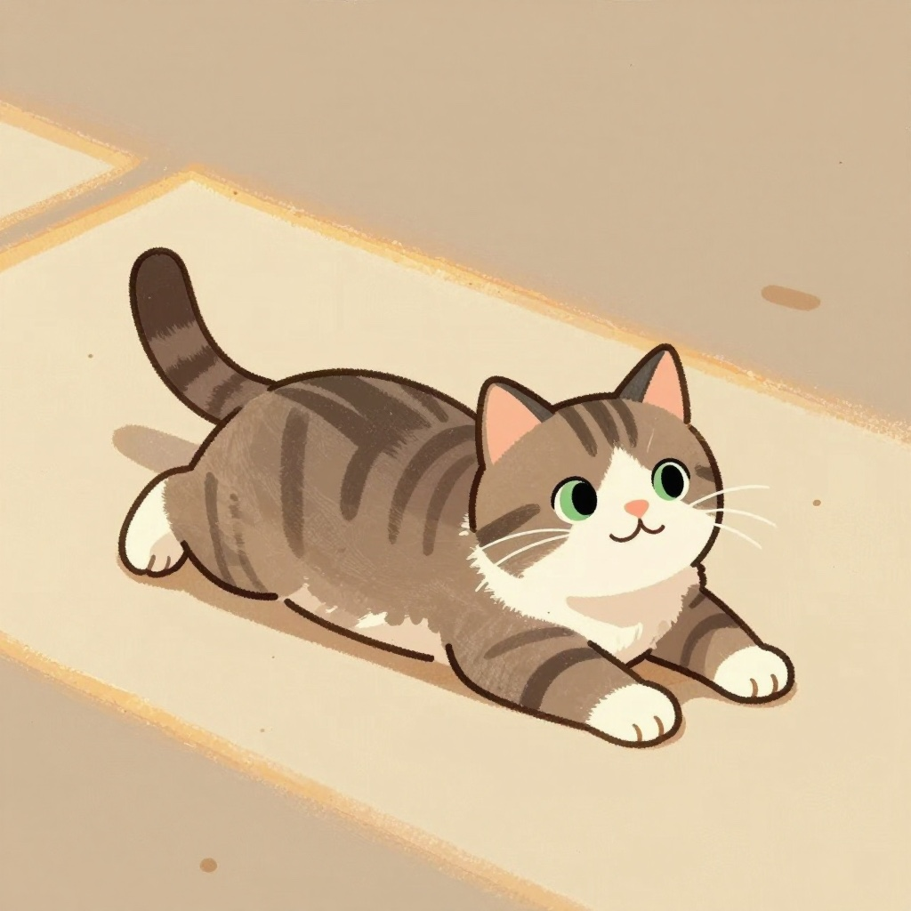
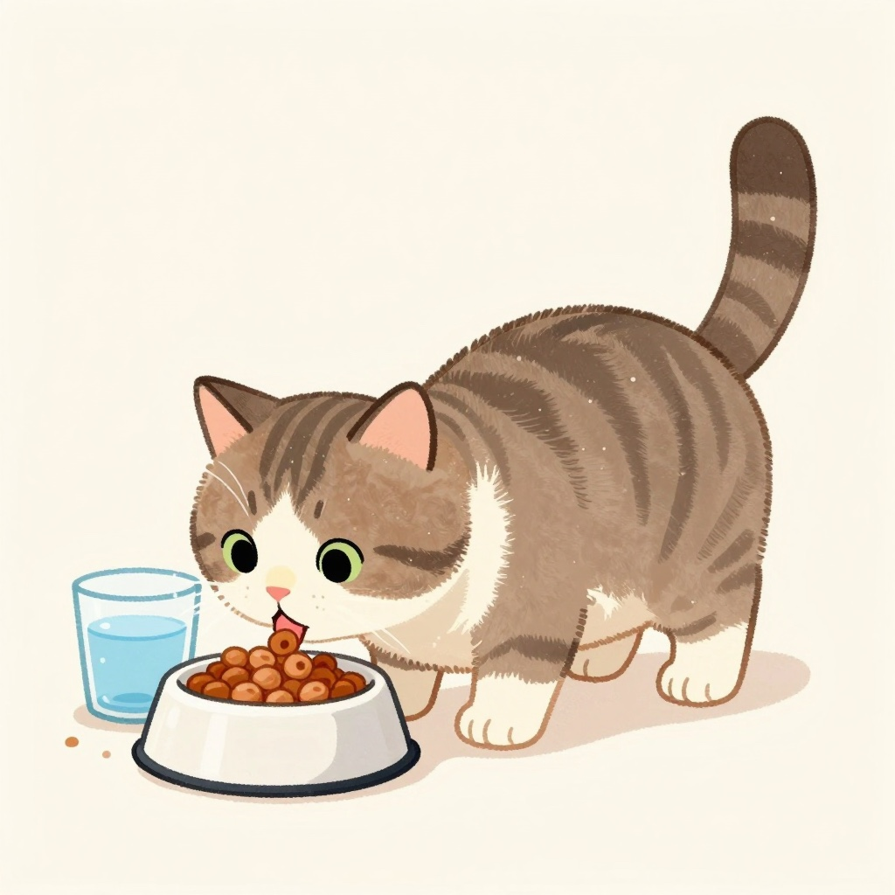
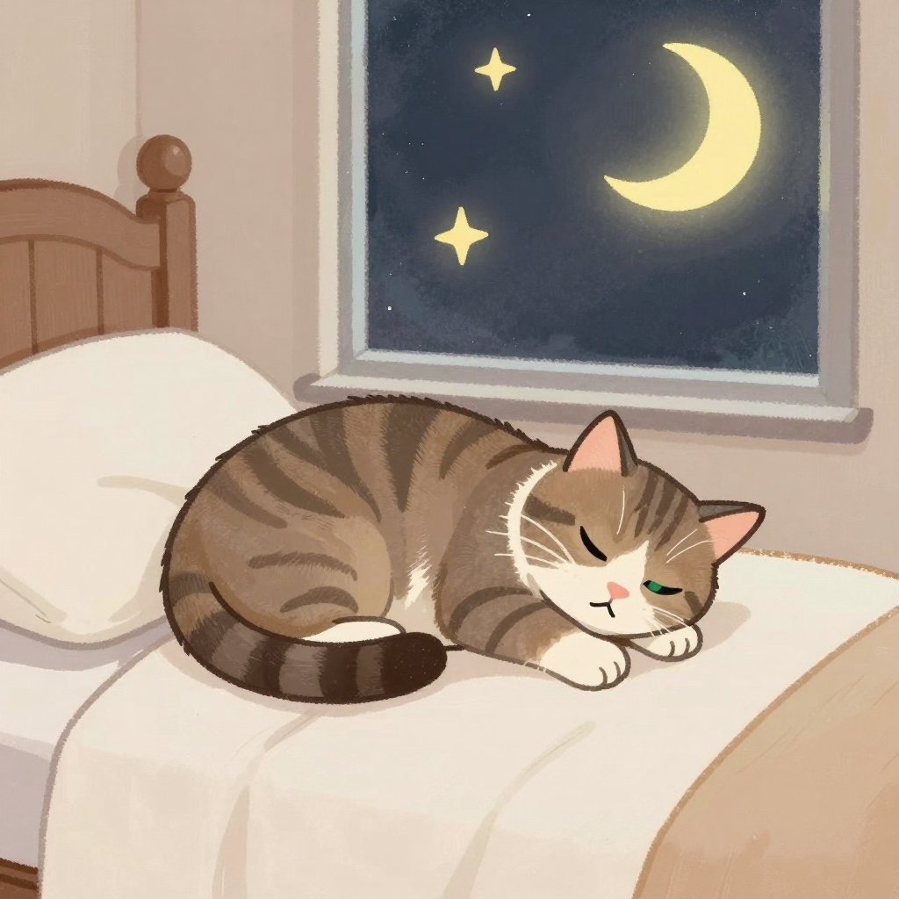

A true story
The story of our cat, and the family that grew around her.
قصّةُ قِطّتِنا، والعائلةِ التي كبِرَت حولَها.

Baba Hisham was studying far from home, where the winters are long and white. One cold day he came back carrying a small striped kitten with four white paws.
Her name was Susu.
كان بابا هشام يدرُسُ بعيداً عن بيتِه، حيثُ الشتاءُ طويلٌ وأبيض. وفي يومٍ باردٍ عادَ يحمِلُ قِطّةً صغيرةً مُخطّطةً لها أربعُ أقدامٍ بيضاء.
اسمُها سوسو.

Susu sat on his papers while he worked, and slept by his feet when the nights ran long.
Just the two of them.
كانت سوسو تجلِسُ فوقَ أوراقِه بينما يعمل، وتنامُ عندَ قدمَيه حينَ يطولُ الليل.
هُما الاثنانِ فقط.

Then the books went into boxes, and Susu went into her soft carrier, and the road went on and on and on.
Where are we going, Baba?
ثمّ وُضِعَت الكُتبُ في صناديق، ووُضِعَت سوسو في حقيبتِها الوثيرة، وطالَ الطريقُ وطالَ وطال.
إلى أينَ نحنُ ذاهبون يا بابا؟

A new home, with a wide sunny window. Susu found the warmest spot in it before the boxes were even open.
This will do nicely.
بيتٌ جديد، فيه نافذةٌ واسعةٌ مُشمِسة. وجدَت سوسو أدفأَ بُقعةٍ فيها قبلَ أن تُفتَحَ الصناديق.
هذا المكانُ يُعجِبُني.

Then Mama came, and the house grew warmer and fuller. Susu sniffed her hand once, thought about it, and decided she was family.
Now we are three.
ثمّ جاءت ماما، فصارَ البيتُ أدفأَ وأكثرَ امتلاءً. شمَّت سوسو يدَها مرّةً واحدة، وفكّرَت قليلاً، ثمّ قرّرَت أنّها من العائلة.
صِرنا ثلاثة.

Then a very small baby came home. Susu crept close, sniffed his toes, and lay down near him to keep watch.
Now we are four.
ثمّ جاءَ إلى البيتِ طفلٌ صغيرٌ جدّاً. اقترَبَت سوسو بهدوء، وشمَّت أصابعَ قدمَيه، ثمّ استلقَت قُربَه تحرُسُه.
صِرنا أربعة.

The sunny window in the morning. Baba’s lap in the evening. Mama’s kitchen whenever something smells good. And a baby to watch over all day long.
A very happy cat.
النافذةُ المُشمِسةُ في الصباح. وحِضنُ بابا في المساء. ومطبخُ ماما كلّما فاحَت رائحةٌ طيّبة. وطفلٌ صغيرٌ تحرُسُه طَوالَ النهار.
قِطّةٌ سعيدةٌ جدّاً.

Our Prophet, peace be upon him, taught us to be gentle with every animal. He told of a woman who shut a cat away and gave her no food and no water, and would not let her go and find food for herself — and it counted against her.
So Susu’s bowls are never empty.
علّمَنا نبيُّنا، صلّى اللهُ عليه وسلّم، أن نرفُقَ بكلِّ حيوان. وأخبرَنا عن امرأةٍ حبَسَت هِرّةً فلم تُطعِمها ولم تسقِها، ولم تترُكها تبحَثُ عن طعامِها — فكانَ ذلكَ عليها.
ولذلك لا يَفرُغُ إناءُ سوسو أبداً.

Goodnight Baba. Goodnight Mama. Goodnight Susu, curled up at the end of the bed.
Goodnight, Yusuf.
تُصبِحُ على خيرٍ يا بابا. وتُصبِحينَ على خيرٍ يا ماما. وتُصبِحينَ على خيرٍ يا سوسو، وأنتِ مُتكوّرةٌ عندَ طَرَفِ السرير.
تُصبِحُ على خير، يا يوسف.